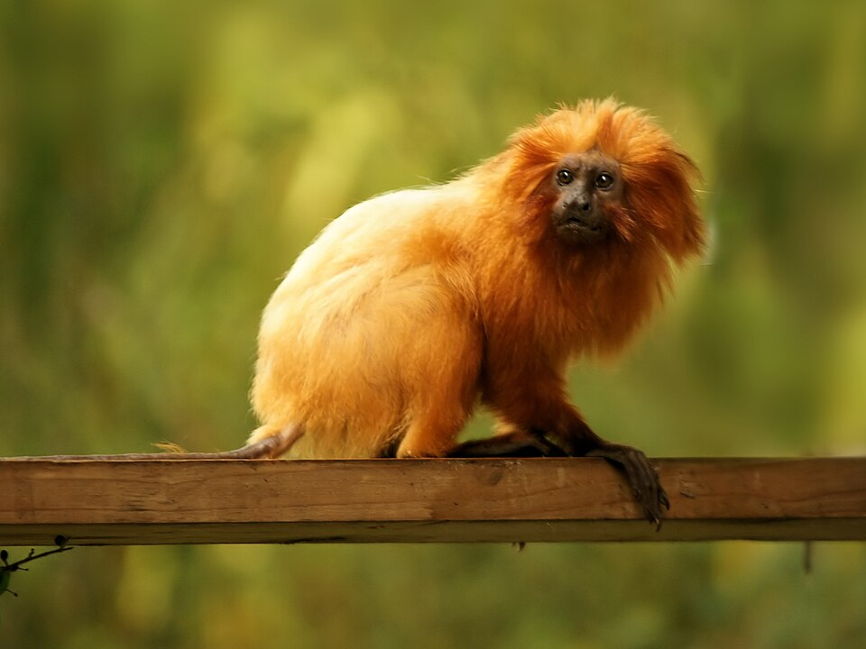

Theodore Judah Elementary • FLL team project
Small monkey. Big forest.
Golden lion tamarins need more than trees. They need safe, living connections between forest patches—and people working together to protect them.

Photographed at La Vallée des Singes, France. © Hans Hillewaert / Wikimedia Commons, CC BY-SA 3.0. Resized, uncropped. Species source.
.jpg){kind=link}
Four facts to know
The question
How does a family cross a road when its safest road is made of trees?
Golden lion tamarins spend most of their lives above the ground. A pasture or highway can turn one forest into isolated islands.
Meet a remarkable family
Twins are common. Mothers nurse, while fathers, siblings, and other group members can help carry the infants.
See how family care worksFind the missing links
Forest area matters, but so do the shape, quality, and connections between patches. A green dot on a map is not automatically safe habitat.
Explore fragmentationThink like a conservationist
Plant corridors, work with landowners, monitor wildlife, and keep projects funded long enough for a young forest to grow.
Try it in the gameTry the idea
The problem is the gap.
This is a teaching diagram, not a real map. In the field, corridors require local ecology, permits, landowner consent, maintenance, and years of growth.
Forest A
Forest B
Concept map
Connection takes more than construction.
- Agree on a route with local landowners.
- Plant locally appropriate native species.
- Care for young trees as the canopy develops.
- Monitor whether wildlife actually uses it.
Recovery is not a straight line
Fifty years of teamwork, setbacks, and new ideas.
The population estimate grew dramatically, then yellow fever caused a major decline. Vaccination, forest restoration, monitoring, and collaboration continue.
- Early 1970sAbout 200
The wild population was thought to have fallen dangerously low.
- 1980sReintroduction
Zoo-born tamarins began carefully planned returns to protected forest.
- 2003Endangered
The species moved from Critically Endangered to Endangered—but remained at risk.
- 2017–18Yellow fever
Disease reduced the estimated population from roughly 3,700 to 2,500.
- 2023About 4,800
A new census found recovery, while showing that isolated forest blocks remain a problem.
From Folsom to the Atlantic Forest
Fourth graders can ask serious questions.
We are learning how biology, engineering, community decisions, and long-term funding fit together. Our job is not to “rescue” wildlife ourselves—it is to learn carefully, share honestly, and support trained conservationists.
Hope ahead
Our next trail starts here.
Explore the ideas we want to test, the steps we can take this term, and the longer work we hope to support.
Follow our future plans →
Proposed steps with visible progress and clear completion goals.
Start with a challenge
Can you reconnect the rainforest?
Raise fictional Forest Credits, earn landowner permission, grow a living corridor, and watch for a safe crossing.